Let’s jump right in and start writing our first automation script. In time-honored fashion we’ll write “Hello, World!” to the Automate Engine logfile.
Before we do anything, we need to ensure that the Automation Engine server role is selected on our CloudForms appliance. We do this from the Configure → Configuration menu, selecting the CloudForms server in the Settings accordion.
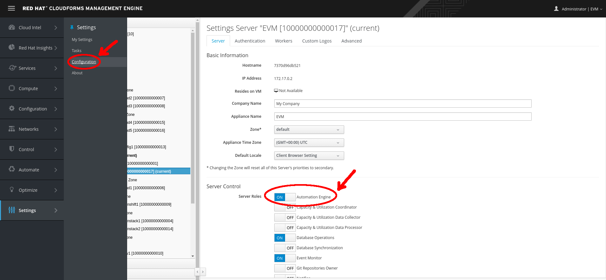
Setting the Automation Engine server role
The Automation Engine Role
Setting the Automation Engine role is necessary to be able to run queued Automate tasks. Automate actions initiated directly from the WebUI—such as running instances from Simulation, or processing methods to populate dynamic dialogs—are run on the WebUI appliance itself, regardless of whether it has the Automation Engine role enabled.
Creating the Environment
Before we create our first automation script, we need to put some things in place. We’ll begin by adding a new domain called ACME. We’ll add all of our automation code into this new domain.
Goto Automate → Explorer, then Configuration → Add a New Domain.
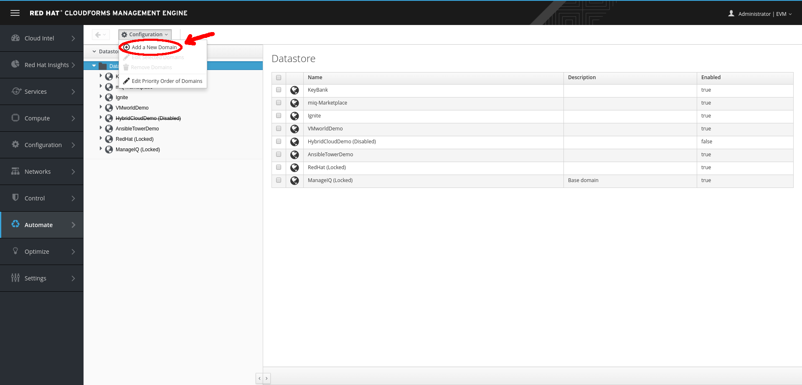
Adding a new domain
We’ll give the domain the name ACME, give it the description ACME Corp., and ensure that the Enabled checkbox is selected.

ACME Domain
Adding a Namespace
Now we’ll add a namespace into this domain, called General. Highlight the ACME domain icon in the sidebar, and click Configuration → Add a New Namespace.
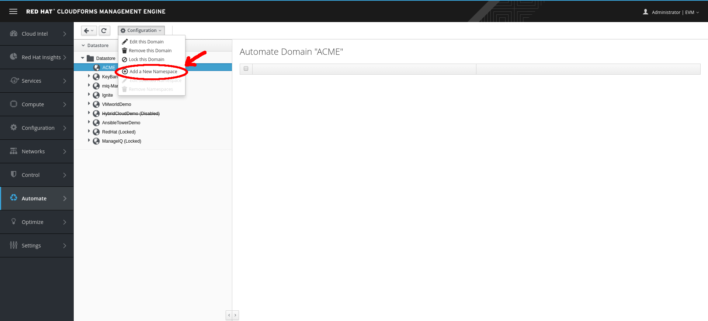
Adding a new namespace
Give the namespace the name General and the description General Content.
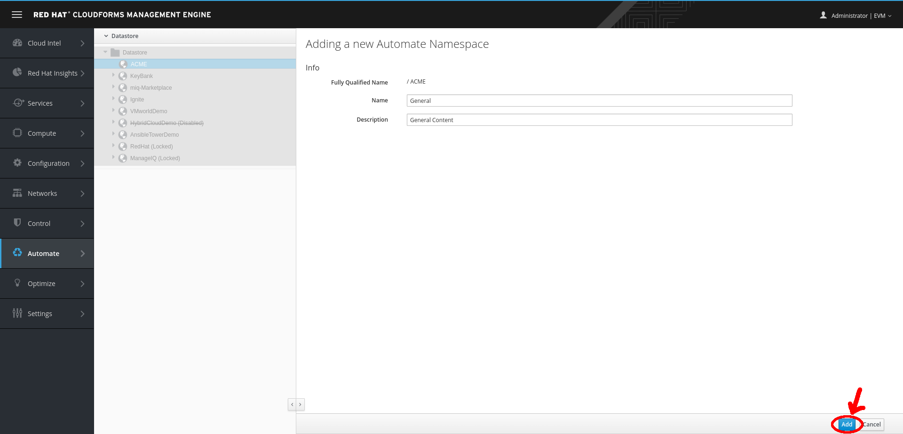
General namespace
Adding a Class
Now we’ll add a new class, called Methods.
Highlight the General domain icon in the sidebar, and click Configuration → Add a New Class.

Adding a new class
Give the class the name Methods and the description General Instances and Methods. We’ll leave the display name empty for this example.
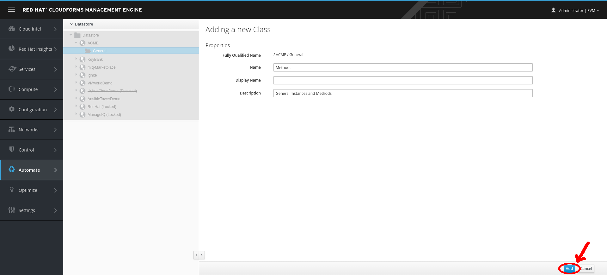
Methods class
Editing the Schema
Now we’ll create a simple schema. Click the Schema tab for the Methods class, and click Configuration → Edit selected Schema.

Editing the schema
Click New Field, and add a single field with name execute, type Method, and data type String.
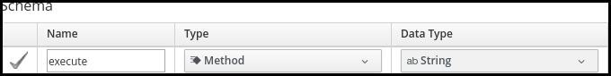
Adding a new schema field
Click the checkmark in the lefthand column to save the field entry, and click the Save button to save the schema. We now have our generic class definition called Methods set up, with a simple schema that executes a single method.
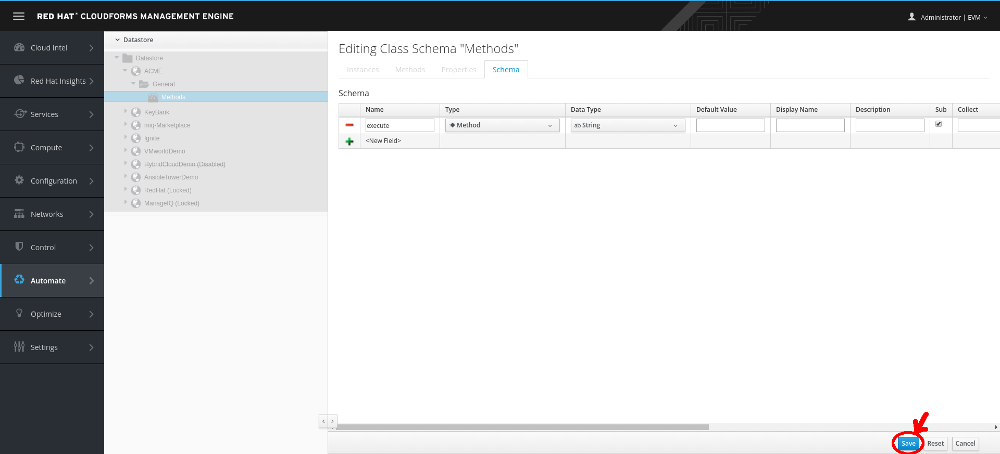
Save schema field
Hello, World!
Our first Automate method is very simple; we’ll write an entry to the automation.log file using this two-line script:
$evm.log(:info, "Hello, World!")
exit MIQ_OK
Adding a New Instance
First we need to create an instance from our class. In the Instances tab of the new Methods class, select Configuration → Add a New Instance.
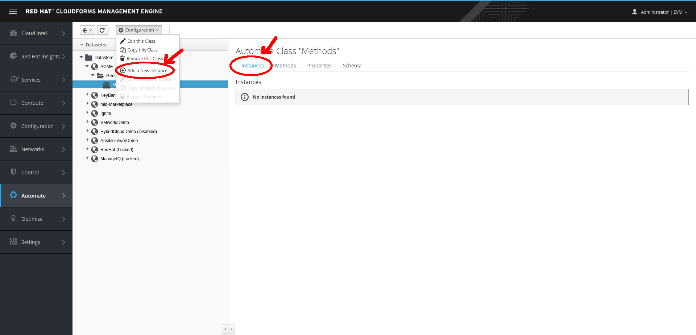
Adding a new instance to our class
We’ll call the instance HelloWorld, and it’ll run (execute) a method called hello_world.
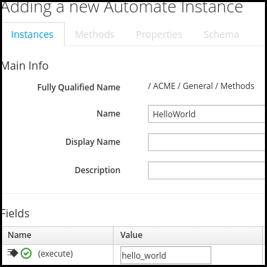
Entering the instance details
Click the Add button.
Adding a New Method
In the Methods tab of the new Methods class, select Configuration → Add a New Method.
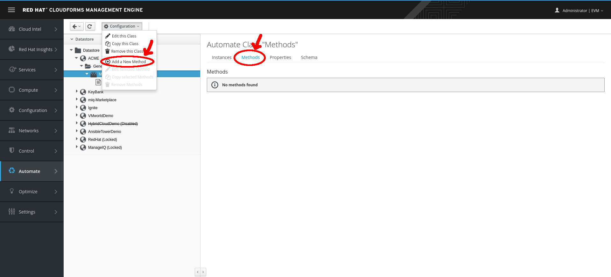
Adding a new method to our class
Name the method hello_world, and paste our two lines of code into the Data window.
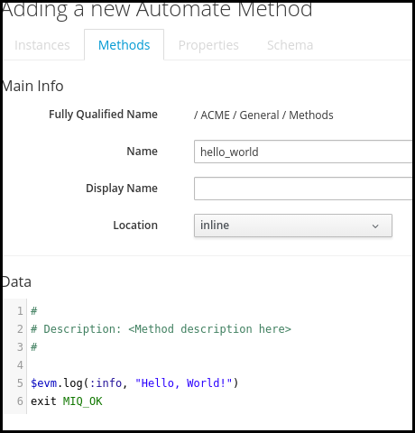
Entering the method details
Click Validate and then Add.
Running the Instance
We’ll run our new instance using the Simulation functionality of Automate. Before we do that, log in to CloudForms again from another browser or a private browsing tab and navigate to Automate → Log.
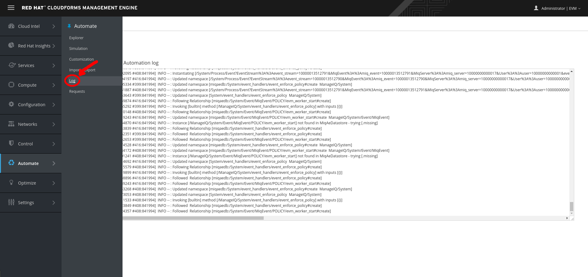
Automate log file
Alternatively, ssh into the CloudForms appliance as root and enter:
tail -f /var/www/miq/vmdb/log/automation.log
In the simulation, we actually run an instance called Call_Instance in the /System/Request/ namespace of the ManageIQ domain, and this in turn calls our HelloWorld instance using the namespace, class, and instance attribute/value pairs that we pass to it.
From the Automate → Simulation menu, complete the details.
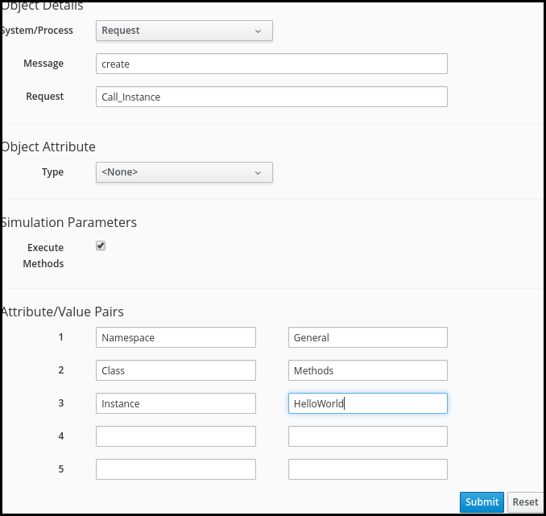
Completing the Simulation details
Click Submit.
If all went well, we should see our “Hello, World!” message appear in the automation.log file:
Invoking [inline] method [/ACME/General/Methods/hello_world] with inputs [{}]
<AEMethod [/ACME/General/Methods/hello_world]> Starting
<AEMethod hello_world> Hello, World!
<AEMethod [/ACME/General/Methods/hello_world]> Ending
Method exited with rc=MIQ_OK
Or, like so from a private browser session:

"Hello World!" log message
Success!
Exit Status Codes
In our example we used an exit status code of MIQ_OK. Although with simple methods such as this we don’t strictly need to specify an exit code, it’s good practice to do so. When we build more advanced multimethod classes and state machines, an exit code can signal an error condition to the Automation Engine so that action can be taken.
There are four exit codes that we can use:
MIQ_OK (0)
Continues normal processing. This is logged to automation.log as:
Method exited with rc=MIQ_OK
MIQ_WARN(4)
Warning message, continues processing. This is logged to automation.log as:
Method exited with rc=MIQ_WARN
MIQ_ERROR / MIQ_STOP (8)
Stops processing current object. This is logged to automation.log as:
Stopping instantiation because [Method exited with rc=MIQ_STOP]
MIQ_ABORT (16)
Aborts entire automation instantiation. This is logged to automation.log as:
Aborting instantiation because [Method exited with rc=MIQ_ABORT]
MIQ_STOP stops the currently running instance, but if this instance was called via a reference from another “parent” instance, the subsequent steps in the parent instance would still complete.
MIQ_ABORT stops the currently running instance and any parent instance that called it, thereby terminating the Automate task altogether.
Summary
In this exercise we’ve seen how simple it is to create our own domain, namespace, class, instance, and method, and run our script from Simulation. These are the fundamental techniques that we use for all of automation scripts!